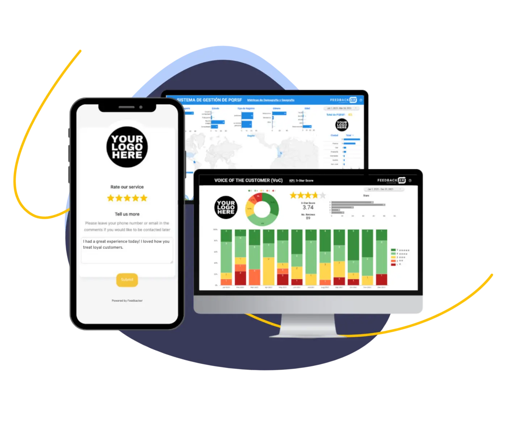
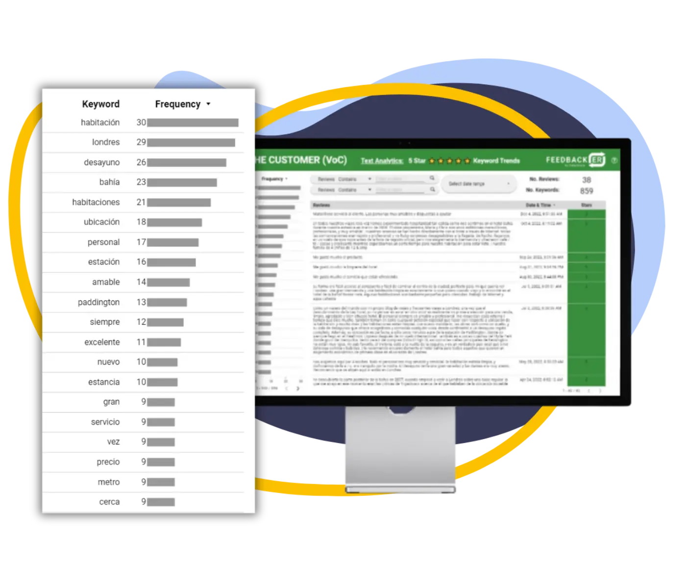

Reach customers.
Short forms, QR codes, and later WhatsApp conversations captured feedback close to the service moment.
Dataplicada product archive · 2019–2026
Feedbacker was our Voice of Customer product. It helped service teams collect comments, find patterns, and decide what needed attention.
THE ORIGINAL SERVICE IS NO LONGER OFFERED
The business process 01
The product connected three jobs that service teams usually handled separately.
Short forms, QR codes, and later WhatsApp conversations captured feedback close to the service moment.
Classification, sentiment, and recurring themes made large volumes of comments easier to review.
Summaries, root causes, and suggested actions helped teams decide what to address next.
Inside the product 02
Dashboards gave teams the overview. Text analytics kept the underlying comments visible.


Purpose-built tools 03
Summaries, root causes, and recommended actions based on customer feedback.
High-confidence and rapid classification for different analysis needs.
Sentiment and keyword movement across time.
WHAT STAYED AFTER THE PRODUCT
Feedbacker shaped how Dataplicada now approaches language and document workflows:
HAVE A SIMILAR CUSTOMER OR DOCUMENT WORKFLOW?